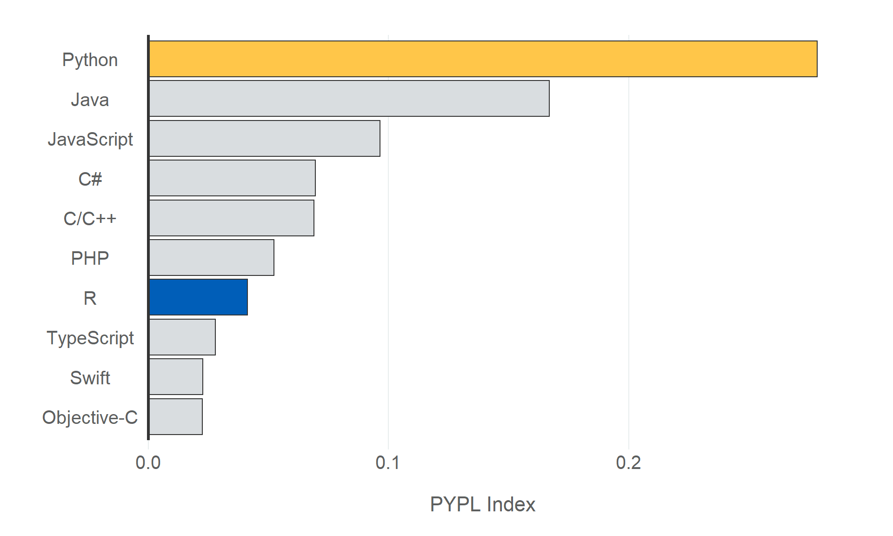
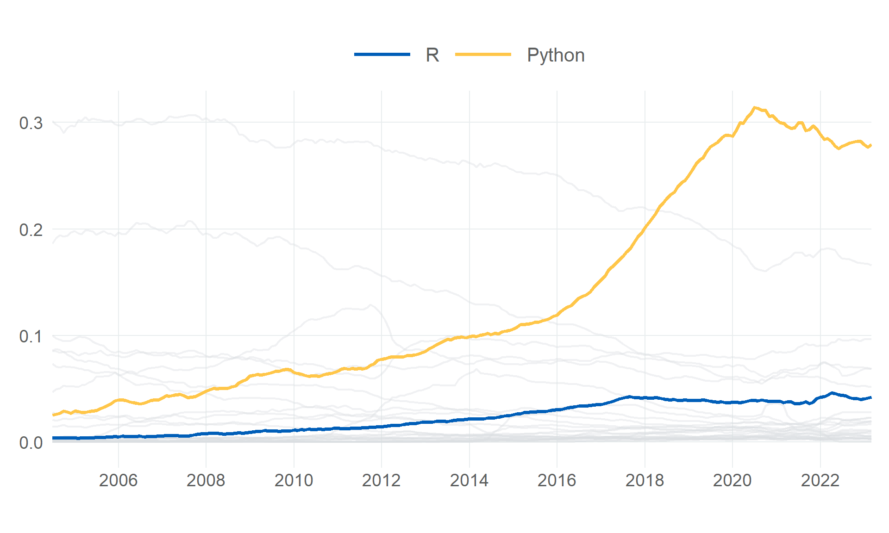

1 Introduction
The goal of these Data Science Guides is…
The purpose of this book isn’t to introduce the methods in each section in great detail. There is a wealth of free, publicly available resources that offer this, and they will do a much better job of it than I can. Instead, I hope this book fills a small gap in the literature, offering a series of concise guides that show you how to implement these methods to a minimum standard.
If you want to do this stuff well then this book will not be sufficient. But if you want to get started, or you already know the fundamentals and want some guidance on implementation, then this book should serve you well.
1.1 Choosing Between R & Python
R and Python are two of the most popular programming languages in the world, and they are both used extensively in data science. However, there is a lot of debate about which language is better, and which language is more suitable for data science. A quick Google search for “R vs Python” will quickly point you in the direction of plenty of strongly-held opinions about why R or Python is better and why the other language is rubbish and a total waste of time, but I think these debates are a little worn out, and it doesn’t help newcomers to the field to see these dichotomous views of two of the most popular languages for data science out there.
In my view, as someone that started out with R before moving on to Python, and that is comfortable using either, I don’t think the most important decision is about which language you will learn. It’s the decision to learn any programming language at all. I’ve found that different people find different languages easier to get started with. Personally, I find that Python makes a little more sense to me than R. While I’ve been using R a lot longer, and am quite capable with it (perhaps more so than I am with Python), I tend to be able to learn methods/concepts easier with Python, because the logic that underpins Python methods just works for me. But that doesn’t mean that the logic underpinning Python is better. It just happens to be the case that it is well-aligned with the way that I think about programming. I think it is more important to find which language makes the most sense to you. Both are very strong on data science, as well as being strong in a number of other areas, and both are very popular. Playing around with them both and working out which one makes most sense to you, and which one gives you the best shot at maintaining your coding journey, is what matters.
It’s also worth noting that learning a second language, when you are confident with your first, is a lot easier. The hard part is learning the first language. If you crack that part, then you will be able to tackle the second, third, and fourth languages with a lot more ease and at a much faster pace. Learning R doesn’t mean you have to stick to R forever, and vice versa for Python. The important thing is that you’ve learned a coding language. Any coding language.
1.1.1 Popularity
Both R & Python are widely used in data science, and both are very popular programming languages. Although there are a number of ways to measure the popularity of a programming language, every measure demonstrates that Python is one of, if not the most popular language in the world, and R is in and around the top ten. A common measure of the popularity of a programming language is the Popularity of Programming Language (PYPL) Index, which is a measure of popularity based on the number of times they are searched for on Google. The PYPL Index is updated monthly, and the data is available from the PYPL website.
Here is how the top ten most popular programming languages looks in 2023 (based on an average PYPL Index in 2023):
While Python is way out in front in first, R is also very high on the list in seventh place. This is particularly impressive given that every other language on the list is a general purpose programming language, while R is a statistical programming language. When we look at the PYPL Index in the UK, we see a similar picture, with Python even further out in front in first place, and R in in fifth place. This is a testament to the popularity of R within the niche that it occupies, of which data science is a part.
We can also look at how the popularity of R and Python has changed over time, in comparison with other languages that are tracked in the PYPL Index. Here is a plot of the PYPL Index over time, from 2005 to 2023:

As you can see, Python has been the most popular programming language since 2018, and R has been in and around the top ten for about a decade. Both languages are extremely popular, and both are likely to remain popular for the foreseeable future.
While the PYPL Index is a good measure of language popularity, there are other ways of measuring the most popular programming language, such as GitHub’s The State Of Open Source Software Report and Stack Overflow’s Developer Survey and Tag Trends.
1.1.2 NHS R & Python Communities
There are already a sizeable number of people using both languages in the NHS, and there are communities that are already in place to support people using R or Python in the NHS.
The NHS-R community is a pretty active community of people that are using R in the NHS. You can find them on the NHS-R website, Twitter, and Slack. They also have a Github organisation and a YouTube channel which both contain tons of really useful resources.
With regards to Python, the equivalent community is the NHS Python Community for Healthcare (typically shortened to NHS-PyCom). The NHS Python Community also have a website, a Slack channel, and they have a Github organisation and a YouTube channel which are both worth checking out. The NHS Python Community is a little smaller than the NHS-R community, but it is still a very active community, and it is growing quickly, with both communities collaborating regularly to try and spread the growth of both languages in the NHS.